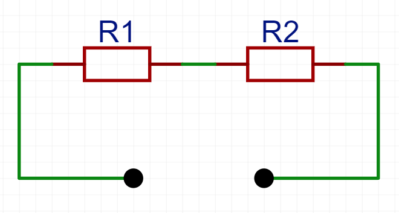
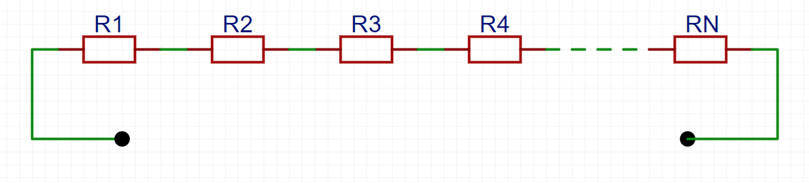
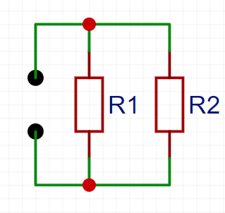
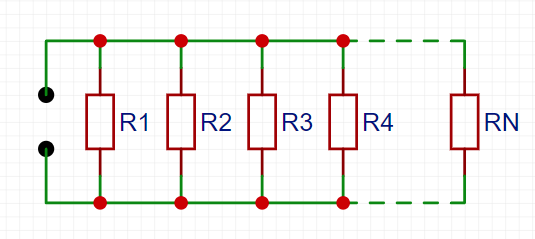

Widerstandsnetze
10. Schaltungen und Messverfahren¶
10.1 Grundschaltungen¶
Widerstände verhalten sich je nach Schaltungsart fundamental unterschiedlich. Die beiden Grundkonfigurationen – Reihen- und Parallelschaltung – bilden das „Alphabet“ der Elektrotechnik und sind Bausteine für alle komplexen Schaltungen.
Wesentliche Unterscheidung:
-
Reihenschaltung (Serienschaltung):
Bauteile sind kaskadiert wie Perlen einer Kette → Strompfad ist ununterbrochen. -
Parallelschaltung:
Bauteile bilden alternative Strompfade → Spannung bleibt konstant.
Widerstände bilden unabhängige Zweige wie parallele Fahrspuren – die volle Spannung wirkt auf jeden Widerstand, während sich der Gesamtstrom aufteilt.
Warum das wichtig ist: - Berechnung von Gesamtwiderständen - Spannungs-/Stromverteilung in Schaltungen - Design von elektronischen Baugruppen - Fehleranalyse in Stromkreisen
🧠 „Wer diese Grundschaltungen beherrscht, kann 90% aller Schaltpläne entschlüsseln.“
(Technikerweisheit)
Reihenschaltung:¶
Grundprinzip:
Widerstände sind wie Glieder einer Kette hintereinander geschaltet. Der gleiche Strom fließt durch alle Bauteile, während sich die Gesamtspannung aufteilt.
Charakteristika: - Stromstärke identisch (\(I = I_1 = I_2 = ...\)) - Spannungen addieren sich (\(U_{ges} = U_1 + U_2 + ...\)) - Gesamtwiderstand größer als jeder Einzelwiderstand
Technische Anwendungen:
↳ Spannungsteiler-Schaltungen
↳ Vorwiderstände für LEDs
↳ Messbereichserweiterung von Voltmeter

$$ R_{ges} = R_1 + R_2 $$
Interaktive Übung: Gesamtwiderstand in Reihenschaltung¶
Sehen wir uns den allgemeinen Fall mit mehreren Widerständen an:

$$ R_{ges} = R_1 + R_2 + ... + R_n $$
🧠 Merkregel: "Summe der Widerstandswerte"
Parallelschaltung:¶
Grundprinzip:
Widerstände bilden unabhängige Strompfade. Die Spannung bleibt konstant, während sich der Gesamtstrom auf die Zweige verteilt.
Charakteristika: - Spannung an allen Widerständen identisch (\(U = U_1 = U_2 = ...\)) - Ströme addieren sich (\(I_{ges} = I_1 + I_2 + ...\)) - Gesamtwiderstand kleiner als der kleinste Einzelwiderstand
Technische Anwendungen:
↳ Stromteiler-Schaltungen
↳ Redundanz in Stromkreisen
↳ Messbereichserweiterung von Amperemeter

$$ \frac{1}{R_{ges}} = \frac{1}{R_1} + \frac{1}{R_2} $$
Mathematische Herleitung der Parallelwiderstandsformel
1. Ausgangsgleichung: $$ \frac{1}{R_{ges}} = \frac{1}{R_1} + \frac{1}{R_2} $$
2. Kehrwert bilden: $$ R_{ges} = \frac{1}{\frac{1}{R_1} + \frac{1}{R_2}} $$
3. Hauptnenner bilden (Erweiterung auf gemeinsamen Nenner \(R_1 R_2\)): $$ R_{ges} = \frac{1}{\frac{R_2}{R_1 R_2} + \frac{R_1}{R_1 R_2}} $$
4. Brüche addieren: $$ R_{ges} = \frac{1}{\frac{R_1 + R_2}{R_1 R_2}} $$
5. Doppelbruch auflösen (Kehrwert des Nenners bilden): $$ R_{ges} = \frac{R_1 R_2}{R_1 + R_2} $$
Endformel: $$ \boxed{R_{ges} = \frac{R_1 R_2}{R_1 + R_2}} $$
🧠 Merkregel: "Produkt der Widerstände geteilt durch die Summe"
Interaktive Übung: Gesamtwiderstand in Parallelschaltung¶
Sehen wir uns nun den allegmeinen Fall mit n Widerständen an:

$$ \frac{1}{R_{ges}} = \frac{1}{R_1} + \frac{1}{R_2} + ... + \frac{1}{R_n} $$
10.2 Wheatstone-Brücke¶

10.2 Wheatstone-Brücke¶
Grundprinzip¶
- Präzisionsmessung durch Nullabgleichverfahren
- Funktionsweise:
Vergleich zweier Widerstandspaare (\(R_1/R_2\) und \(R_3/R_4\))
Abgleich bis \(U_{Brücke} = U_{x} = 0\) (Nullanzeige)
Abgleichbedingung¶
$$ \frac{R_1}{R_2} = \frac{R_3}{R_4} $$
- Bei Erfüllung: Brückenspannung = 0
- \(R_4\) wird als Präzisionspotentiometer ausgeführt
Vorteile¶
| Eigenschaft | Vorteil |
|---|---|
| Genauigkeit | ±0.05% typisch |
| Auflösung | Bis 1µΩ möglich |
| Störunempfindlich | Kompensiert Spannungsschwankungen |
Anwendungen¶
- Präzisionsmessungen (Laborstandard)
- Dehnungsmessstreifen (DMS)
\(R_3/R_4\) als Referenz, \(R_1\) = DMS-Widerstand - Sensortechnik (Druck-, Kraftsensoren)
- Historisch: Widerstandsbestimmung vor Digitalmultimetern
Praxisbeispiel (DMS-Messung)¶
- \(R_1\) = 120Ω (DMS)
- \(R_2\) = 120Ω (Festwiderstand)
- \(R_3\) = 100Ω (Referenz)
- \(R_4\) = 100Ω + 10Ω Trimmpotentiometer → Abgleich auf 100.2Ω
Fehlerquellen:
- Thermische Drift der Widerstände
- Elektrische Störungen (→ abgeschirmte Leitungen verwenden!)
- Mechanische Erschütterungen
"Die Wheatstone-Brücke bleibt seit 1843 das präziseste analoge Messverfahren für Widerstände"
(Charles Wheatstone, 1833)
10.3 Vierleitermessung (4-Punkt-Messung)¶
Grundprinzip¶
- Getrennte Strom- und Spannungspfade:
Zwei Leitungen führen Messstrom (I), zwei separate Leitungen messen Spannung (U) - Messung nur des Spannungsabfalls am Widerstand
- Eliminiert Einflüsse durch:
▸ Leitungswiderstände
▸ Übergangswiderstände an Kontakten
▸ Kabelwiderstände
Mathematische Basis¶
$$ R = \frac{U_{mess}}{I_{konst}} $$
- \(I_{konst}\): Konstanter Messstrom
- \(U_{mess}\): Gemessener Spannungsabfall
Vorteile gegenüber 2-Leiter-Messung¶
| Parameter | 2-Leiter | 4-Leiter |
|---|---|---|
| Genauigkeit | ±1% | ±0.01% |
| Messbereich | >1Ω | >0.001Ω |
| Kabeleinfluss | Hoch | Null |
Anwendungen¶
- Präzisionswiderstände (Shunts, RTDs)
- Niederohm-Messungen (Kontaktwiderstände, Leiterbahnen)
- Temperatursensoren (Pt100/Pt1000 nach DIN EN 60751)
- Halbleitertechnik (Dünnschichtwiderstände, Wafer-Tests)
Praxiswissen¶
Typische Fehlerquellen:
- Thermische Spannungen → Nutzung von AC-Messstrom
- EMV-Störungen → Abschirmung der Messleitungen
- Leckströme → Messgeräte mit >10MΩ Eingangswiderstand
Industriestandards:
- IEEE 118: Präzisionswiderstandsmessungen
- DIN EN 60584: Thermoelement-Messungen
- IEC 60751: RTD-Spezifikationen
Merksatz:
„Strom fließt außen, Spannung misst innen – so tricksen Sie Kabelwiderstände aus“